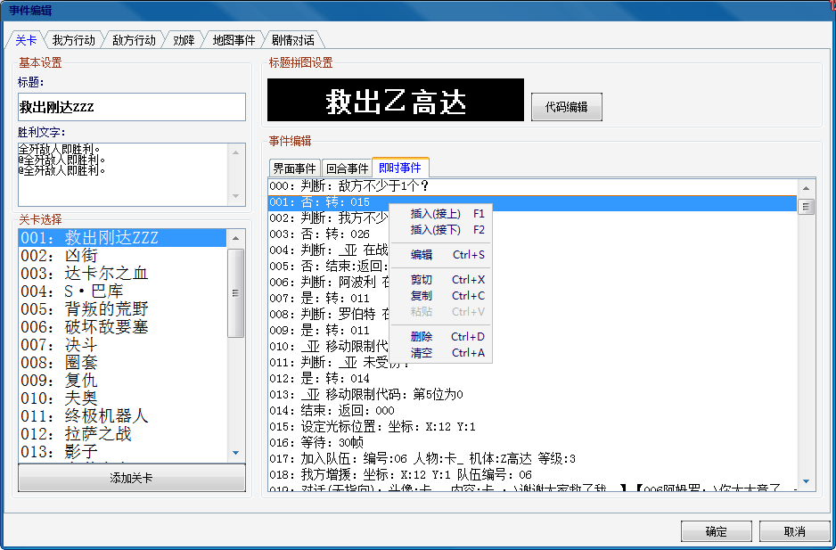
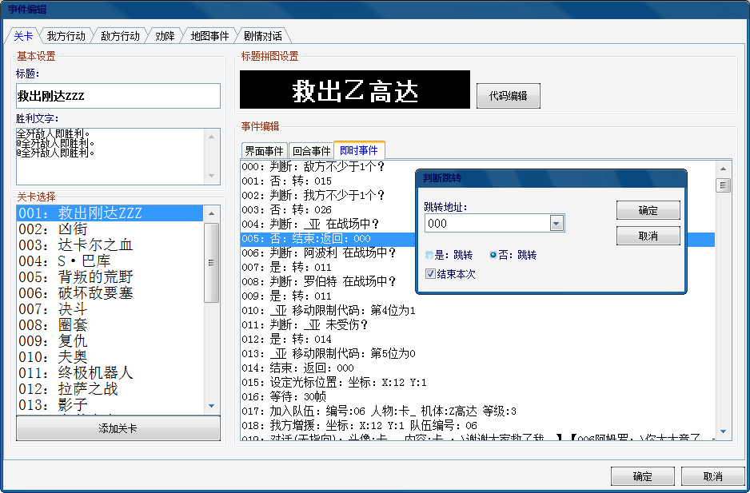
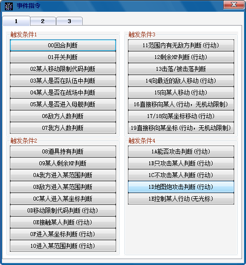
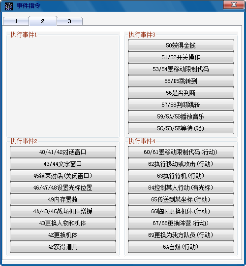
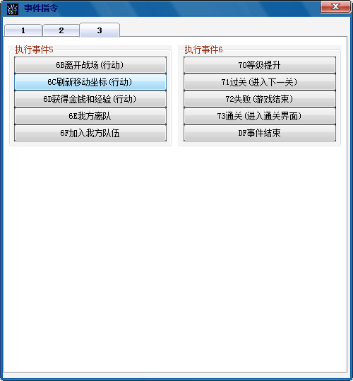

1.事件说明
事件要素，即发生的条件和执行的结果， 详见修改资料-数据-事件整理。通常情况下事件由单一条件和单一结果组成，即达成什么条件，执行什么结果。当然事件也可以是满足多个条件然后执行一个结果或者满足单一条件执行多个结果，所有的组合结果由修改者自己把握。
2.如何编辑

事件编辑操作指令一共为8项，插入（接上），插入（接下）即在当前选中项的上方或者下方插入一条事件，编辑为编辑当前选中的事件项，改变其参数。剪切即复制当前项、复制即复制当前项、粘贴即粘贴已经剪切或者复制的项，删除即删除当前事件项，清空为清除当前页面所有项目。下来具体介绍下编辑和插入的用法：

如上图所示右键选择需要编辑的项，选择编辑弹出编辑框，即可更改可更改的参数或者逻辑。



原版的触发条件和执行事件如上图所示，具体意义请参考修改资料-数据-事件整理和修改资料-程序-事件脚本